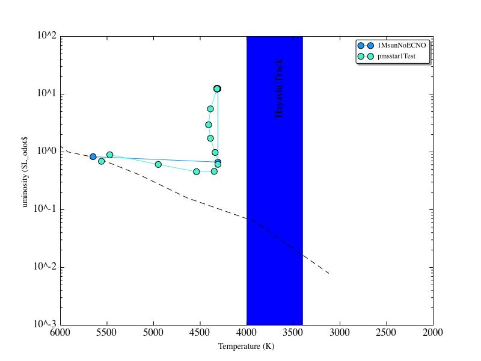

Date
& Time: 03/27/2012
Location:
From home
Computing
context: Macho Mac
Scripts/Software
created today:
Useful
computer stuff figured out today:
If
you get the following error when attempting to use growlnotify:
growlnotify[681:903]
could not find local GrowlApplicationBridgePathway, falling back to
NSDNC
Go
to System Preferences --> Growl --> Stop Growl (then Start
Growl)
From
last time: I copied over a clean version of Peter's code (as
initially modified by Greg to get it to work) from my "backup"
dir in to "UnalteredCode" in my working dir.
If
you want to add a constant numerical value to the names of all the
(numbered) files in a directory, enter the following command at the
unix prompt, when you're within that directory:
ls
*_model_info.txt | sort -r | awk -F'[_]' '{old=$0; n=$1+100;
sub($1,n,$0); print "mv " old " "$0}' | sh
If
you want a simulation to 'pick up' where the results of a previous
one left off, make sure to set MODA = -1 in the .start file
Figured
out how to get the legend on my python-generated figures to have
multiple columns (and thereby fit on the visible portion of the
graph):
legend(prop={'size':8},loc='lower
center', ncol=3, fancybox=True, shadow=True)
Updated
both MyPythonGUIPlottingScript.py and plot_HR_evolution.py to
include this nicer, more legible version of the legend.
To
set a pop-up notification on my desktop that lets me know when one
of these really long thecode.f runs is finished (running in the
background), start the run like this:
It
looks like thecode.f can't handle NRIT values above 1000. Either
that, or it can't figure out how to do mod-arithmatic on NMOD values
above 9999. So, you can't really run the code for 10000 timesteps
and have it write output every 1000 steps. For now, my best work
around is to let the code go for 9500 time steps, and have it write
out model data every 500 steps.
Should
look into this more next time, in thecode.f itself.
Continuing
from last time:

Figure
1: A
comparison of Peter's 1Msun, out-of-the-box, with-fusion model
results vs. my own allegedly with- and with-out fusion 1Msun
results. My with-fusion model is temp1MsunWithFusion. It hangs out
exclusively in the upper right of the plot. My no-fusion models are
temp1MsunNoFusion and temp1MsunNoFusionCont. Peter's out-of-the-box,
with-fusion model is the pmsstar1Test (orange). Notice that *my*
no-fusion models follow very similar tracks to Peter's with-fusion
model, while *my* with-fusion model behaves very differently from
Peter's.
Last
time (see Figure 1 above) I figured out that my modified version of
TheCode.f (run with no fusion) produces results almost identical to
the what Peter's unmodified out-of-the-box-with-fusion code does. My
modified version of TheCode.f (run *with* fusion) does NOT reproduce
the results of Peter's code, given the same(-ish) starting
conditions.
This
is concerning, because it means I've
Misunderstood
Peter's version of TheCode.f (probably, but not necessarily, the
parts connected to the energy generation through fusion), and
Broken
it in some way that I don't understand.
My
work today is to figure both of these things out. Specifically, to
figure out which of my modifications have caused these changes.
To
Do:
Take
my clean copy of Peter's code and make the Efusion parameter = 0 in
the nucrat.f subroutine.
Run
that version on the same starting conditions I fed his code in
Figure 1 (above.)
pmsstar1.start
(input)
1MsunE0.txt
(text output file)
See
what difference it makes, if any.
Doesn't
even converge. This might change if I changed the Crad setting to
~0 and the Cwrk setting to 1.00
Remove
the modifications from step 1.
Add
in just the modification where I comment out the CNO cycle energy
contribution in the nucrat subroutine.
Run
that version of the code on the starting conditions from step 1a.
pmsstar1.start
(input)
1MsunNoECNO.txt
(text output file)
See
what difference it makes, if any.
Okay,
the code converged. I'm going to continue its evolution using:
pmsstar1.inp
(input)
1MsunNoECNO.txt
(text output file, new results appended to the end)
That
also converged. Let's take a look at the result...

Figure
2
I'd
get more info out of this if I modify the .start and .inp files to
print out model info more frequently.

Figure
3: Peter's out-of-the-box 1Msun code (blue), vs. an otherwise
identical run with Cwrk = 1 and Crad ~ 0 (aqua). The behavior of
the aqua model/points looks like the behavior of my with-fusion
models. Need to figure out why setting Enuc = 0 with Crad ~0 and
Cwrk = 1 sets my models' behavior back to that of Enuc !=0, Crad =
1, Cwrk = 0.
Run
the unmodified code on a modified version of pmsstar1.start and
pmsstar1.inp
Set
Cwrk = 1.00, Crad ~ 0.00
Set
both .start and .inp files to write out model info more frequently.
inputs/1MsunSmallCradLargeCwrk.start
(outputs/1MsunSmallCradLargeCwrk.mod,
outputs/1MsunSmallCradLargeCwrk.txt)
Results:
See Figure 3 above.
Since
it looks like the Cwrk vs. Crad settings are what's changing the
behavior of TheCode from its native state, try running thecode.f on
a setup where Cwrk and Crad both =1.
Inputs:
inputs/1MsunCradOnCwrkOn.start/.inp -->
outputs/1MsunCradOnCwrkOn.txt/.mod -->
results/1MsunCradOnCwrkOn/
Results
of this type of run (Figure 4, below):

Figure
4: Peter's 1Msun out-of-the-box (blue) vs. a 1Msun with Crad =
Cwrk = 1 (aqua).
What
happens if you start a run with Crad and Cwrk both set to almost
zero?
inputs:
1MsunCradOffCwrkOff.start/inp
outputs:
1MsunCradOffCwrkOff.txt/.mod
results:
1MsunCradOffCwrkOff/, Figure 5 (below)

Figure
5: The out-of-the-box run (blue) vs. a run where Crad AND Cwrk
~= 0 (aqua). It looks like the setting Crad ~ 0 is what keeps the
model stuck up there at the upper right point of the evolutionary
track.
What
happens if you set Crad = 0.5, vs. 1.0? Try comparing/contrasting
the results from those runs.
Inputs:
inputs/1MsunCradHalfCwrkOff.start/inp
Outputs:
outputs/1MsunCradHalfCwrkOff.txt/.mod
Results:
results/1MsunCradHalfCwrkOff/, Figure 6 (below)

Figure
6: Again, the reference run is blue, while my data are aqua.
This is a run with Crad = 0.5, Cwrk = 0.00. It looks like Crad
needs to be closer to 1.00 for the model to contract.
Is
it *just* turning Crad off that causes the models to get stuck and
not contract? Or does setting Enuc = 0 effectively do the same
thing?
I
should check the original pmsstar1.start and pmsstar1.inp files: how
were their Crad and Cwrk values configured? Were they the same in
both files, or did it change from one to the next?
i.
In pmsstar1.start, Crad = 1, Cwrk = 0.
In
pmsstar1.inp, Crad = 1, and Cwrk = 1.
I
should figure out what Crad and Cwrk are doing in TheCode.f...
Looks
like more of a gas pressure scaling than anything else..
Maybe
you need to run TheCode with the .start Crad/wrk parameters for a
certain amount of time, and then switch to the .inp set of
parameters? Let the model 'relax' to a certain point before
adding in Cwrk contribution, maybe?
But,
why? Physically, what does this mean, and why does it make
sense?
What
happens if I set Enuc = 0.5, but do the same settings for Crad and
Cwrk as in the pmsstar1.start and pmsstar1.inp files?
In
thecode.f, set E = 0.5 * E in the penultimate line of subroutine
nucrat, and then re-compiled the code.
Inputs:
/inputs/1MsunEnucHalf.start/.inp
Outputs:
/outputs/1MsunEnucHalf.mod/.txt
Results:
running the code with E = 0.5 * E, just from the .start file, stops
with a 'STOP INVSTATE' error.
Maybe
try the same thing as in step (10), but with E = 0.9 * E, instead?
Still
ends with a 'STOP INVSTATE' error on the .start file run.
Still
ends with the same error, even when I remove all the scalings from
the E = whatever in nucrat.
Try
running the pmsstar1.start file on this, just to see what
happens...
Needed
to recompile TheCode.f after I removed the energy scaling!
TheCode.f
will run successfully (at least on the .start portion of the run)
with E = 0.98 * E, but not with E = 0.9 * E
Going
back and running *my* version of TheCode.f
(Research/BodenheimerCode/workingdir/thecode.f) on
pmsstar1WithFusion.start and pmsstar1WithFusion.inp (so, same Cwrk
and Crad settings as for Peter's original code, and with fusion set
to be all the way on.). This should produce the same results that
his code does. Does it?
Short
answer: Nope, it doesn't produce the same results as Peter's code.
(Grrr...)

Figure
7: My version of thecode.f (aqua) vs. Peter's (blue) with similar
inputs.
Let's
try feeding the exact same inputs (pmsstar1WithFusion.start and
pmsstar1WithFusion.inp) to Peter's code, and see what happens:

Figure
8: Peter's code run on the out-of-the-box inputs (blue) vs. my
pmsstar1WithFusion inputs (aqua)
Okay!
So! Peter's code also produces the same result that my code does on
these inputs. So all I need to do is figure out how these inputs are
different from the out-of-the-box ones, and maybe that'll tell me why
this is happening.
Differences
between the two files (running the diff comparison command on the
files):
dTMN in mine is 1e8. dTMN in
pmsstar1.start is 2e8
Mine has those extra parameters
in there towards the end.
What happens if I delete all of
that extra info stuff, and set my dT parameters to be identical to
the ones in those files?
See Figure 9 below. Why are
these supposedly identical inputs not producing the same results?
It looks like the pmsstar1.start
results stay within that 'stuck' point themselves, and that the real
evolution towards the main sequence only happens once you start
running the pmsstar1.inp file through the code. Checking this now,
though. (unalteredcode/results/pmsstar1Check)
Actually, it looks like the
problem has to do with my parsing scripts. They don't seem to be
capturing the atmospheric (aka HR diagram info) data from the second
phase of the runs (i.e., the parts that run off of the .inp input
files). So, the only stuff that gets passed into model_HR_info.txt
is from the .start portion of the run. (So it's true that the
second phase of the run is where most of the magic happens in terms
of the movement on the HR diagram. That information just isn't
getting picked out, or perhaps it's just not getting sent to the HR
info file.)
I've got the parsing stuff sorted
out now (at least in pythonParsingForOriginalCode.py), but the
points from my input files are still staying stuck up there near
their starting points.
Are my input files producing
results that just don't move as far forward in time? Let's check
this.
From results/pmsstar1Test (i.e.
the out-of-the-box case results), the largest time reached was
1.2566D+15 seconds.
From
results/pmsstar1WithFusionCont (i.e., my input files), the largest
time reached was 8.9437D+13 seconds.
So, why
are my input files (which appear to be identical to Peter's, as far
as I can tell, aside from the names of the .mod files that get read
in during the second phase) using such small timesteps? What's
preventing them from taking larger timesteps?
Figure
9: Original inputs (blue) vs. my inputs (aqua) supposedly modified
to be exactly like the original inputs.
What
happens if you start a run with Crad on, Cwrk off, and Enuc set to
less than one?
Why
does Cwrk need to be turned off initially in order for the model to
contract? What does that mean, physically? Is the equation of
state of the gas isothermal? Really low opacity? Does that even
make any sense in this situation?